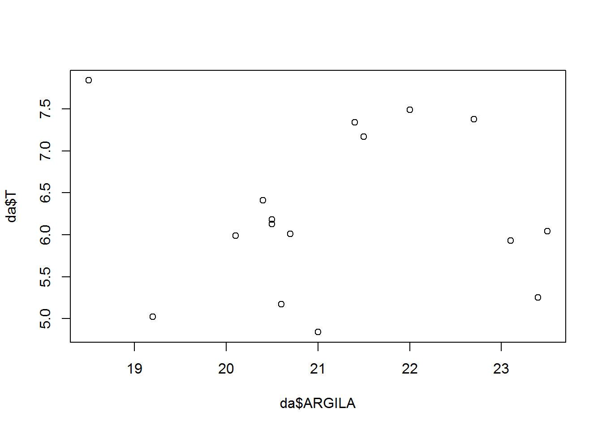
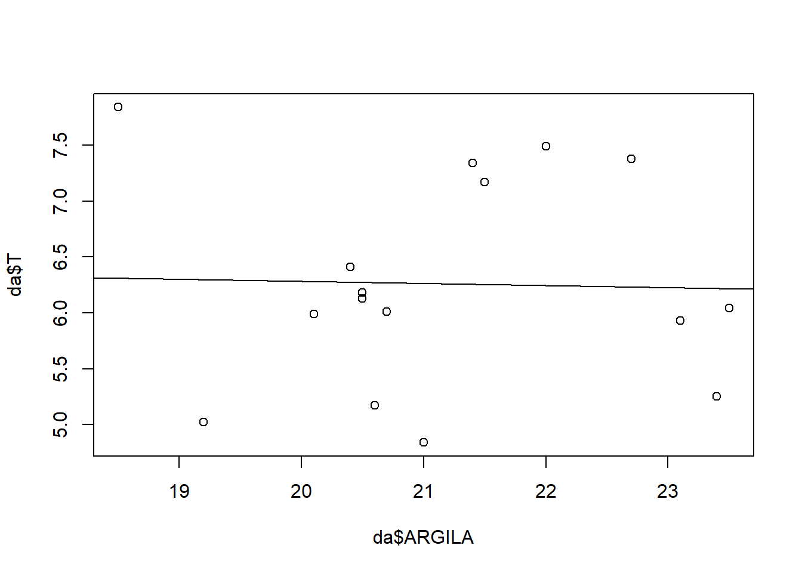

4 Introdução à Ciência dos Dados
A Ciência dos Dados, ou Data Science, é uma área interdisciplinar voltada para o estudo e a análise de dados, estruturados e não-estruturados, que visa a extração de conhecimento, detecção de padrões e/ou obtenção de variáveis para possíveis tomadas de decisão.
O modelo base das ferramentas necessárias em um projeto típico de ciência dos dados é parecido com isso:

Figure 4.1: Modelo base de um projeto de Ciência dos Dados.
4.1 Importação
Primeiro devemos importar os dados no R. Ou seja, pegar os dados armazenados em um arquivo, base de dados ou na Web e carregá-los em uma estrutuda de dados no R. Sem eles no R, não conseguiremos fazer Data Science.
Para essa prática, vamos utilizar um banco de dados oriundo de um estudo geomorfológico.
Importação via web
Acesse o banco de dados na web: Clique no link para o arquivo em txt geomorfologia.txt.
# definir o caminho
URL <- "https://raw.githubusercontent.com/arpanosso/r_data_science_fcav/master/dados/geomorfologia.txt"
# Importação
dados<-read.table(URL,
header = TRUE) # Argumento para cabeçalho na primeira linha
# Inspeção do banco de dados
head(dados) # mostra o 6 primeiros registros## SUP Solo Amostra X AMG AG AM AF AMF SILTE ARGILA S_A AF_AG P pH
## 1 I LV 1 0 0.2 3.72 20.4 22.9 30.0 1.2 21.5 0.05 6.16 42 4.2
## 2 I LV 2 25 0.1 4.27 22.6 23.6 28.4 1.2 20.4 0.05 5.53 22 3.8
## 3 I LV 3 50 0.7 5.00 22.7 22.2 26.9 1.2 21.4 0.05 4.44 41 4.8
## 4 I LV 4 75 0.4 3.80 23.7 24.4 26.7 0.6 20.5 0.02 6.42 27 4.0
## 5 I LV 5 100 0.4 3.10 22.3 24.6 26.9 2.1 20.7 0.10 7.94 11 4.4
## 6 I LV 6 125 0.4 3.80 23.8 19.1 27.1 2.2 23.5 0.09 5.03 12 4.0
## K Ca Mg H_Al SB T V
## 1 0.27 1.4 0.3 5.2 1.97 7.17 27
## 2 0.11 0.4 0.1 5.8 0.61 6.41 10
## 3 0.34 2.4 0.4 4.2 3.14 7.34 43
## 4 0.13 0.7 0.1 5.2 0.93 6.13 15
## 5 0.11 1.4 0.3 4.2 1.81 6.01 30
## 6 0.14 0.6 0.1 5.2 0.84 6.04 14Importação via Excel
Acesse o banco de dados para essa prática, denominado geomorfologia.xlsx, salve o arquivo em uma pasta de seu computador.
Figure 4.2: Na aba Environment selecione a opção Import Dataser e escolha From Excel…
Figure 4.3: 1) Clique em Browse…, acesse a pasta na qual você salvou o arquivo; 2) selecione o arquivo geomorfologia.xlsx; 3) clique em Open.
Figure 4.4: Pré-visualização dos dados, observe que o código de importação é apresentado abaixo dessa janela. Copie esse código, e clique em CANCEL.
Cole as linhas de código no script do R e as execute, para ter a importação dos dados.
library(readxl)
geomorfologia <- read_excel("C:/Users/Panosso/Desktop/geomorfologia.xlsx")
View(geomorfologia)Figure 4.5: Após executar o código, os dados devem ser apresentados dessa forma.
4.2 Organização
Uma vez que os dados estão no R, a próxima etapa é organizá-los, ou seja, armazená-los de uma forma consistente que combine a semântica da base de dados com a maneira com a qual eles são armazenados.
Cada coluna é uma variável e cada linha é uma observação.
Figure 4.6: Exemplo de dados organizados em planilha eletrônica, onde cada coluna é uma variável e cada linha é uma observação, ou registro.
Observação: O R, como a maioria dos softwares estatísticos, utiliza o ponto como separador decimal, ou seja, como o símbolo usado para separar a parte inteira da parte complementar não inteira da representação decimal do numeral de um real (ponto flutuante).
Portanto, aconselhamos você a padronizar o separador decimar do seu computador. Para isso sigua os passos abaixo:

Figure 4.7: Acesse o PAINEL DE CONTROLE, na opção REGIÃO clique em CONFIGURAÇÕES ADICIONAIS… e modifique o SÍBOLO DECIMAL para PONTO e o SÍMBOLO DE AGRUPAMENTO DE DÍGITO para VÍRGULA.
Vamos conhecer a estrutura do nosso banco de dados, a partir da função str.
str(dados)## 'data.frame': 106 obs. of 22 variables:
## $ SUP : chr "I" "I" "I" "I" ...
## $ Solo : chr "LV" "LV" "LV" "LV" ...
## $ Amostra: int 1 2 3 4 5 6 7 8 9 10 ...
## $ X : int 0 25 50 75 100 125 150 175 200 225 ...
## $ AMG : num 0.2 0.1 0.7 0.4 0.4 0.4 1.2 0.8 1.1 1.2 ...
## $ AG : num 3.72 4.27 5 3.8 3.1 3.8 3.6 4.7 4.5 5.9 ...
## $ AM : num 20.4 22.6 22.7 23.7 22.3 23.8 23.1 25.8 25.5 32.8 ...
## $ AF : num 22.9 23.6 22.2 24.4 24.6 19.1 21.7 21.1 18.9 19.8 ...
## $ AMF : num 30 28.4 26.9 26.7 26.9 27.1 26.5 24.7 25.4 21.7 ...
## $ SILTE : num 1.2 1.2 1.2 0.6 2.1 2.2 0.7 0.2 2.5 0.2 ...
## $ ARGILA : num 21.5 20.4 21.4 20.5 20.7 23.5 23.1 22.7 22 18.5 ...
## $ S_A : num 0.05 0.05 0.05 0.02 0.1 0.09 0.03 0.01 0.11 0.01 ...
## $ AF_AG : num 6.16 5.53 4.44 6.42 7.94 5.03 6.03 4.49 4.2 3.36 ...
## $ P : num 42 22 41 27 11 12 11 16 38 25 ...
## $ pH : num 4.2 3.8 4.8 4 4.4 4 4.8 5.4 4.4 5.2 ...
## $ K : num 0.27 0.11 0.34 0.13 0.11 0.14 0.23 0.28 0.19 0.14 ...
## $ Ca : num 1.4 0.4 2.4 0.7 1.4 0.6 1.6 3.3 1.6 2.9 ...
## $ Mg : num 0.3 0.1 0.4 0.1 0.3 0.1 0.7 1.3 0.5 1.7 ...
## $ H_Al : num 5.2 5.8 4.2 5.2 4.2 5.2 3.4 2.5 5.2 3.1 ...
## $ SB : num 1.97 0.61 3.14 0.93 1.81 0.84 2.53 4.88 2.29 4.74 ...
## $ T : num 7.17 6.41 7.34 6.13 6.01 6.04 5.93 7.38 7.49 7.84 ...
## $ V : num 27 10 43 15 30 14 43 66 31 60 ...Podemos identificar que nosso banco de dados é composto por 106 linhas e 22 colunas. As duas primeiras colunas são do tipo texto (chr - character) e as demais colunas são numéricas (num - numeric).
4.3 Transformação dos dados
Literalmente, recortar o banco de dados, assim podemos focar nas observações de interesse. Criar novas variáveis em função das existentes e calcular, por exemplo, um resumo estatístico desse conjunto de interesse.
Por exemplo, vamos selecionar somente os solos do tipo LV.
# Criar um filtro
f <- dados$Solo == "LV"
# Criar um banco de dados auxiliar da
da <- dados[f,]
# Vamos ver a estrutura desse banco auxiliar
str(da)## 'data.frame': 16 obs. of 22 variables:
## $ SUP : chr "I" "I" "I" "I" ...
## $ Solo : chr "LV" "LV" "LV" "LV" ...
## $ Amostra: int 1 2 3 4 5 6 7 8 9 10 ...
## $ X : int 0 25 50 75 100 125 150 175 200 225 ...
## $ AMG : num 0.2 0.1 0.7 0.4 0.4 0.4 1.2 0.8 1.1 1.2 ...
## $ AG : num 3.72 4.27 5 3.8 3.1 3.8 3.6 4.7 4.5 5.9 ...
## $ AM : num 20.4 22.6 22.7 23.7 22.3 23.8 23.1 25.8 25.5 32.8 ...
## $ AF : num 22.9 23.6 22.2 24.4 24.6 19.1 21.7 21.1 18.9 19.8 ...
## $ AMF : num 30 28.4 26.9 26.7 26.9 27.1 26.5 24.7 25.4 21.7 ...
## $ SILTE : num 1.2 1.2 1.2 0.6 2.1 2.2 0.7 0.2 2.5 0.2 ...
## $ ARGILA : num 21.5 20.4 21.4 20.5 20.7 23.5 23.1 22.7 22 18.5 ...
## $ S_A : num 0.05 0.05 0.05 0.02 0.1 0.09 0.03 0.01 0.11 0.01 ...
## $ AF_AG : num 6.16 5.53 4.44 6.42 7.94 5.03 6.03 4.49 4.2 3.36 ...
## $ P : num 42 22 41 27 11 12 11 16 38 25 ...
## $ pH : num 4.2 3.8 4.8 4 4.4 4 4.8 5.4 4.4 5.2 ...
## $ K : num 0.27 0.11 0.34 0.13 0.11 0.14 0.23 0.28 0.19 0.14 ...
## $ Ca : num 1.4 0.4 2.4 0.7 1.4 0.6 1.6 3.3 1.6 2.9 ...
## $ Mg : num 0.3 0.1 0.4 0.1 0.3 0.1 0.7 1.3 0.5 1.7 ...
## $ H_Al : num 5.2 5.8 4.2 5.2 4.2 5.2 3.4 2.5 5.2 3.1 ...
## $ SB : num 1.97 0.61 3.14 0.93 1.81 0.84 2.53 4.88 2.29 4.74 ...
## $ T : num 7.17 6.41 7.34 6.13 6.01 6.04 5.93 7.38 7.49 7.84 ...
## $ V : num 27 10 43 15 30 14 43 66 31 60 ...Vamos continuar o processo de filtragem e selecionar somente as colunas SUP, ARGILA, SILTE e T.
da<-da[,c(1,11,10,21)]
str(da)## 'data.frame': 16 obs. of 4 variables:
## $ SUP : chr "I" "I" "I" "I" ...
## $ ARGILA: num 21.5 20.4 21.4 20.5 20.7 23.5 23.1 22.7 22 18.5 ...
## $ SILTE : num 1.2 1.2 1.2 0.6 2.1 2.2 0.7 0.2 2.5 0.2 ...
## $ T : num 7.17 6.41 7.34 6.13 6.01 6.04 5.93 7.38 7.49 7.84 ...Vamos criar uma nova variável, ARG_SILT a partir da soma dos valores de ARGILA + SILTE, para isso vamos utilizar o símbolo de colunas cifrão ($). Em seguida, vamos aplicar a transformação logarítmica aos dados de T.
da$ARG_SILT <- da$ARGILA + da$SILTE
da$Log_T <- log10(da$T)
str(da)## 'data.frame': 16 obs. of 6 variables:
## $ SUP : chr "I" "I" "I" "I" ...
## $ ARGILA : num 21.5 20.4 21.4 20.5 20.7 23.5 23.1 22.7 22 18.5 ...
## $ SILTE : num 1.2 1.2 1.2 0.6 2.1 2.2 0.7 0.2 2.5 0.2 ...
## $ T : num 7.17 6.41 7.34 6.13 6.01 6.04 5.93 7.38 7.49 7.84 ...
## $ ARG_SILT: num 22.7 21.6 22.6 21.1 22.8 25.7 23.8 22.9 24.5 18.7 ...
## $ Log_T : num 0.856 0.807 0.866 0.787 0.779 ...Agora vamos gerar um resumo estatístico para esses dados. A primeira coluna é do tipo texto, então, deve ser retirada do banco de dados antes de realizarmos os cálculos. Para isso, utilizamos o índice \(-1\) na dimensão das colunas do objeto da, ou seja, estamos retirando a coluna 1 SUP de da.
# Número de observações
apply(da[,-1],2,length)## ARGILA SILTE T ARG_SILT Log_T
## 16 16 16 16 16# Média
apply(da[,-1],2,mean)## ARGILA SILTE T ARG_SILT Log_T
## 21.1937500 1.2125000 6.2618750 22.4062500 0.7920605# Mediana
apply(da[,-1],2,median)## ARGILA SILTE T ARG_SILT Log_T
## 20.8500000 1.1000000 6.0850000 22.6500000 0.7842487# Variância
apply(da[,-1],2,var)## ARGILA SILTE T ARG_SILT Log_T
## 2.101958333 0.782500000 0.890589583 3.015291667 0.004318016# Desvio Padrão
apply(da[,-1],2,sd)## ARGILA SILTE T ARG_SILT Log_T
## 1.44981321 0.88459030 0.94371054 1.73645952 0.06571161# Podemos utilizar a função summary.
summary(da[,-1])## ARGILA SILTE T ARG_SILT
## Min. :18.50 Min. :0.200 Min. :4.840 Min. :18.70
## 1st Qu.:20.48 1st Qu.:0.475 1st Qu.:5.760 1st Qu.:21.32
## Median :20.85 Median :1.100 Median :6.085 Median :22.65
## Mean :21.19 Mean :1.212 Mean :6.262 Mean :22.41
## 3rd Qu.:22.18 3rd Qu.:2.125 3rd Qu.:7.213 3rd Qu.:23.20
## Max. :23.50 Max. :2.600 Max. :7.840 Max. :25.70
## Log_T
## Min. :0.6848
## 1st Qu.:0.7598
## Median :0.7842
## Mean :0.7921
## 3rd Qu.:0.8581
## Max. :0.8943Agora podemos gerar o conhecimento, por meio da Visualização e Modelagem.
Essas tem suas vantegens e desvantagens as quais são complementares, portanto, quaisquer análises reais farão muitos vezes iteraçoes entre elas.
Figure 4.8: Visualização e modelagem são dois processos iterativos, onde a matemática é uma ferramenta essencial para a extração de padrões, declaração e testes de hipóteses.
4.4 Visualização
Atividade fundamentalmente humana, uma boa visualização lhe mostrará coisas que não esperava, ou levantará novas questões sobre os dados. Além disso, pode mostrar também que você esta fazendo a pergunta errada, ou que precisa coletar dados diferentes. Visualizações podem surpreender o analista de dados, mas não escalam particularmente bem, por que requerem um humano para interpretá-las.
plot(da$ARGILA,da$T)
4.5 Modelação
Modelo são ferramentas complementares da visualização. Uma vez que você tenha feito perguntas suficientemente precisas, poderá usar um modelo para respondê-las. Modelos são fundamentalmente matemáticos ou computacionais, então geralmente escala bem. Porém, cada modelo faz suposições e, por sua própria natureza, não podem questionar suas própria hipóteses, ou seja, um modelo não pode nos surpreender.
plot(da$ARGILA,da$T)
mod<-lm(da$T~da$ARGILA)
summary.lm(mod)##
## Call:
## lm(formula = da$T ~ da$ARGILA)
##
## Residuals:
## Min 1Q Median 3Q Max
## -1.4256 -0.4641 -0.1615 0.9560 1.5268
##
## Coefficients:
## Estimate Std. Error t value Pr(>|t|)
## (Intercept) 6.66574 3.69347 1.805 0.0927 .
## da$ARGILA -0.01906 0.17389 -0.110 0.9143
## ---
## Signif. codes: 0 '***' 0.001 '**' 0.01 '*' 0.05 '.' 0.1 ' ' 1
##
## Residual standard error: 0.9764 on 14 degrees of freedom
## Multiple R-squared: 0.000857, Adjusted R-squared: -0.07051
## F-statistic: 0.01201 on 1 and 14 DF, p-value: 0.9143abline(mod)
4.6 Comunicação
É a última etapa do data science, a mais importante. Não importa quão bem bem seus modelos e visualizações o levaram a entender os dados, a menos que você também consiga comunicar seus resultados para outras pessoas.
Uma dica importante, é estudar RMarkdown! Ótima linguagem de marcação de texto, utilizada para gerar relatórios em HTML, .doc e pdf. Inclusive, esse material que estamos utilizando no curso.

Figure 4.9: https://bookdown.org/yihui/rmarkdown-cookbook/
4.7 Programação
Permeia todas as etapas da Ciência dos Dados.
Uma questão recursiva…
O computador é a ferramenta do cientista de dados.
R é um ambiente e linguagem de programação de código aberto para computação estatística, bioinformática e gráficos.
Como linguagem de programação, garante a reprodutibilidade das análises.
Estudantes podem usar as mesmas ferramentas que os profissionais.
Todos podem usar as melhores ferramentas independente do poder financeiro.
Qualquer um pode reproduzir as suas análises.
Você pode corrigir problemas.
Você pode desenvolver suas próprias ferramentas.
Linguagem orientada a objetos R (Ross Ihaka e Robert Gentleman).
R é uma poderosa linguagem, flexível e possui excelentes facilidades gráficas.
R é um projeto open-source e está disponível na internet sobre a General Public License (<www.gnu.org/copyleft/gpl.html> e <www.fsf.org>).